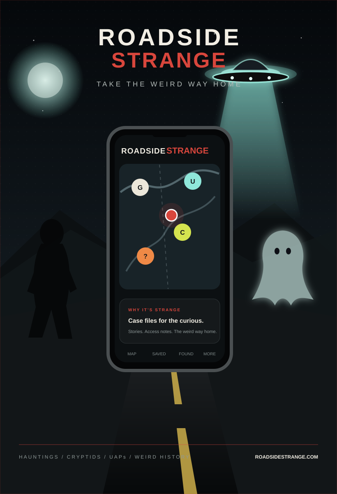

HauntingsGhost lore, haunted places and unsettling history.
LIVE ON iOS + ANDROID
GHOSTS · CRYPTIDS · UAPs · WEIRD HISTORY
There’s something strange just off the road.
Roadside Strange turns the haunted, unexplained and wonderfully weird into places you can actually explore. Find cases near you, read the story, save the stop and take the weird way home.
Free to download • 18+ • Optional Premium
👻 HAUNTING
🛸 UAP
✦ FOUND +1
HAUNTINGS ✦ CRYPTIDS ✦ UAPs ✦ LOCAL LEGENDS ✦ WEIRD HISTORY ✦ STRANGE STORIES ✦ ROAD TRIPS ✦ HAUNTINGS ✦ CRYPTIDS ✦ UAPs ✦ LOCAL LEGENDS ✦ WEIRD HISTORY ✦
THE MAP FOR PEOPLE WHO ASK “WHAT HAPPENED HERE?”
Thousands of stories.
One weird map.
Open Roadside Strange and the ordinary map around you starts looking very different.
Explore alleged hauntings, cryptid reports, UAP cases, local legends, strange history and stories that never quite disappeared. Each case is tied to a place, region or reasonable public reference point so the story has somewhere to live.
CryptidsCreature reports, regional legends and famous mysteries.
UAPsReported sightings and geographic cases worth knowing.
Other weirdHistory, mysteries and stories that refuse a category.
FIELD NOTE / 001

STRANGE DOESN’T HAVE TO MEAN SLOPPY
Built for curiosity.
Curated with discipline.
Cases are added deliberately
Roadside Strange is not an automated feed dumping anything it finds onto a map. Cases are reviewed and written for the app.
Public access comes first
The goal is a useful strange stop, not sending somebody over a fence. Public areas, roads and reasonable reference points matter.
Folklore stays folklore
A legend can be worth preserving without pretending it is established fact. Reports, lore and documented history are treated differently.
MORE THAN PINS ON A MAP
Find it. Read it.
Go see what’s there.
Built around the moment you realize something strange is only twenty minutes away.
Explore nearby
Use your location or drop a search pin somewhere else and see what strange cases live around it.
Case files
Read the story, why it’s strange, location context and access notes.
Save & mark Found
Keep the cases that interest you and mark the places you actually visit.
Road trips
Premium turns strange stops into a route instead of a pile of screenshots.
Achievements
Turn exploring and finding places into a strange travel history worth keeping.
Join the story
Comment on cases. Eligible Premium users can submit new ones for review.
THE FASTEST ROUTE IS OVERRATED.
Take the weird way home.
ALSO FROM DIVINEAPPS
Meet Paranormal Suitcase.
A paranormal-investigation field toolkit built around the real sensors and recording hardware already in your phone. EVP recording, K2 / EMF, SLS pose mapping, REM Pod monitoring, geophone, pressure, evidence cameras, Room Watch and an investigation journal — with clear explanations of what every tool actually measures.
Android closed testing in progress · EVP Recorder + K2 / EMF free · Optional Premium unlockPARANORMALSUITCASEREAL SENSORS · REAL RECORDINGS
●
ON AIRPODCASTS · CREATORS · INVESTIGATORS
Tell strange stories?
We should know each other.
Roadside Strange fits beside paranormal investigations, eyewitness interviews, cryptid research, UAP reporting, folklore, odd history and road-trip storytelling.
No scripted reviews.Complimentary creator access is for actually exploring the app. No obligation to post. No obligation to say something nice.
Creator information ↗WHY THIS EXISTS
It started with one simple question.
“What’s haunted near me?”
Then ghosts became cryptids. Cryptids became UAPs. Then came weird history, road trips, saved case files, achievements and the realization that there is a lot more strange out there than anyone has time to Google one place at a time.
Built independently by people who actually like this stuff.FAQ
Before you take
the weird exit.
Is Roadside Strange free?+
Yes. Core browsing, case files, directions, saving locations, marking Found and comments are available without Premium.
Are all of the stories proven true?+
No. Roadside Strange includes documented history alongside folklore, legends, eyewitness reports and alleged paranormal or unexplained activity.
Does it send people onto private property?+
It is designed not to. Access information favors public visitor areas, roads, towns and reasonable nearby reference points. Always follow current signs and property boundaries.
Can users add cases?+
Eligible Premium users can submit cases. Submissions are reviewed before publication rather than instantly appearing as verified.
Why 18+?+
Some cases include mature themes, disturbing history, violence in historical accounts or user-generated content. Roadside Strange is intended for adults.
YOUR NEXT EXIT IS PROBABLY WEIRD
See what’s hiding near you.
Roadside Strange is live on iPhone and Android.